Repetições
As estruturas de repetição são úteis quando precisamos repetir N vezes a execução de um bloco de comandos até que uma condição seja atendida. Elas são chamadas de laços de repetição ou loops.
Um bom exemplo do seu uso é quando queremos mostrar uma tabuada, que nada mais é que uma lista. Observe que a linha se repete 10x.
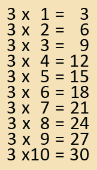
Para construir as estruturas de repetição, utilizaremos os três principais comandos: for, while e o do...white.
For
A sintaxe do comando for é composta por três instruções:
➜ valor inicial da variável de controle
➜ condição que determina se a repetição vai continuar ou não
➜ incremento/decremento da variável de controle
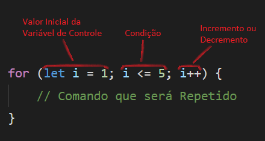
As instruções são separadas por ponto e vírgula. Entre as chaves { } devem ser inseridos os comandos que serão repetidos. O incremento i++ é a mesma coisa que i = i + 1.
A repetição é controlada por uma variável que, no exemplo acima, inicia em 1.
IMPORTANTE: A estrutura termina quando a condição resulta em false (falso).
No exemplo seguinte veremos a sequência de execução das instruções:
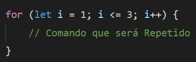
1º ➜ let i = 1
2º ➜ i <= 3 (se i for menor ou igual a 3, a estrutura continua)
3º ➜ Comando que será Repetido
4º ➜ i++ (aqui o i é somado com 1, que resulta em 2)
5º ➜ i <= 3 (se i for menor ou igual a 3, a estrutura continua. 2 é menor que 3.)
6º ➜ Comando que será Repetido
7º ➜ i++ (i é somado com 1, que resulta em 3)
8º ➜ i <= 3 (aqui o i é igual a 3 e a estrutura continua)
9º ➜ Comando que será Repetido
10º ➜ i++ (i é somado com 1, que resulta em 4)
11º ➜ i <= 3 (aqui o i é 4, maior que 3, então a estrutura encerra, pois a condição é falsa)
Note que o incremento/decremento é executado por último, após o "Comando que será Repetido".
Exemplo:
Nesse exemplo, o programa deve ler um número e apresentar a tabuada desse número. Ao abrir o arquivo html com o navegador, temos a seguinte imagem.
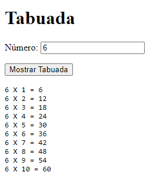
No arquivo html abaixo temos uma nova tag, a pre. A tag pre é a tag utilizada para representar texto pré-formatado. Um texto dentro desse elemento é exibido em uma fonte diferente da fonte original do arquivo. Espaços em branco são mantidos no texto da mesma forma em que este foi digitado.
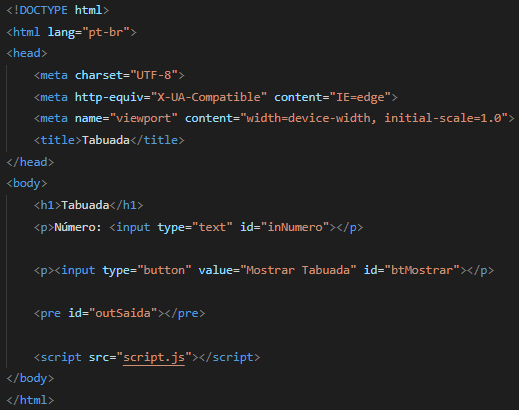
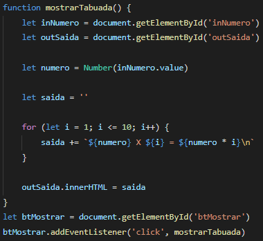
Dentro da função mostrarTabuada( ), temos primeiramente a referência com os elementos HTML. Logo depois, o valor digitado dentro do inNumero é transformado em número (Number) e armazenado dentro da variável numero.
Em seguida temos a criação da variável saida com o valor vazio. Essa variável será responsável por armazenar todo o conteúdo da tabuada (4 X 1 = 4, 4 X 2 = 8, ...).
Agora temos a estrutura for. A instrução let i = 1 significa que a repetição começará no valor 1. A instrução i <= 10 é a condição, se i for menor ou igual a 10, o comando dentro das chaves irá ser executado. Com o resultado da condição igual a true, o comando entre as chaves é executado. O sinal de += após a variável saida, significa que a variável saida receberá ela mesma mais (+) a template string seguinte.
saida = saida + `${numero} X ${i} = ${numero * i}\n`
O incremento (i++) é executado por último, após o comando entre as chaves { }.
Perceba que a variável de controle é o i, que inicialmente tinha o valor de 1. Na ordem, a estrutura segue essa sequência:
1º ➜ variável i é iniciada com o valor 1.
2º ➜ é verificado na condição se o i é menor ou igual a 10.
3º ➜ se for true, o comando entre as chaves é executado. Onde tem o i, será o valor 1. E esse comando todo será armazenado dentro da variável saida.
4º ➜ em seguida, o i é incrementado (i++), o seu valor que era de 1, será somado com mais 1, que agora terá o valor 2.
5º ➜ agora o valor de i é 2, e voltamos a instrução de condição (i <= 10) e a verificação é feita, se i é menor ou igual a 10.
6º ➜ se for true, o comando entre chaves é executado e o resultado é armazenado novamente dentro da variável saida.
7º ➜ em seguida, o i é incrementado (i++), o seu valor que era de 2, será somado com mais 1, que agora terá o valor 3.
Esses passos serão realizados até a condição (i <= 10) resultar em false.
No comando outSaida.innerHTML = saida, o conteúdo que está dentro da variável saida será inserido dentro do elemento pre que possui o id="outSaida". Essa inserção é graças ao comando innerHTML.
O innerHTML altera o conteúdo de um elemento.
Exemplo:
Nesse exemplo faremos um programa que leia um número e apresente uma sequência decrescente até o número 1.
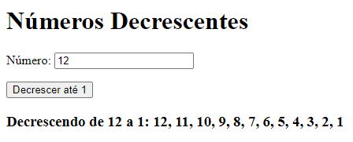
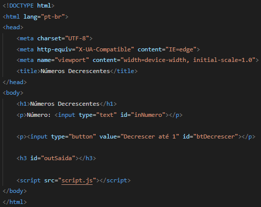
A variável saida é onde ficará armazenado todos os números da sequência. Antes de entrar na estrutura de repetição (for), é armazenado na variável saida a string "Decrescendo de ${numero} a 1: ${numero}", que será mostrada (por exemplo) da seguinte forma "Decrescendo de 12 a 1: 12".
Dentro da estrutura for será armazenado (dentro da variável saida) somente o restante dos números da sequência que decrescerá, pois na declaração da variável saida (antes do for) já foi armazenado a string "Decrescendo de ${numero} a 1: ${numero}".
Dentro da estrutura for, primeiramente temos a declaração da variável de controle. A variável i recebe numero - 1, pois o número digitado já foi escrito anteriormente dentro da variável saida. Então, se o número digitado for 12 (por exemplo), a variável de controle será 11.
Logo em seguida temos a condição, se i for maior ou igual a 1. Se resultar em true, o comando entre as chaves { } será executado. O sinal de += significa que a variável saida recebe ela mesma mais (+) a template string.
saida = saida + `, ${i}`
Na primeira vez em que o comando entre as chaves { } é executado, temos a variável i com o valor de 11 (por exemplo). Então a variável saida receberá a seguinte string:
`Decrescendo de 12 a 1: 12, 11`
Após isso, o i é decrementado (i = i - 1). A cada mudança da variável de controle (i), a condição é verificada, se for true o comando dentro das chaves { } é executado e logo em seguida ocorre o decremento. Esse loop acontece até a condição (i >= 1) retornar false.
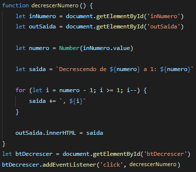
While - Repetição com teste no início
Um laço de repetição também pode ser criado com o comando while, que realiza o teste condicional logo no inicio, diferente do for. A tradução da estrutura while é "enquanto a condição for verdadeira, execute".
while (condição) {
comandos
}
Exemplo:
Para realizarmos os exemplos iremos colocar o programa dentro da tag script e salvaremos o arquivo no index.html. Iremos abrir o arquivo index.html com o navegador. Para visualizarmos a saída (console.log) iremos abrir o console do navegador clicando com o botão direito do mouse e clicando em "Inspecionar".
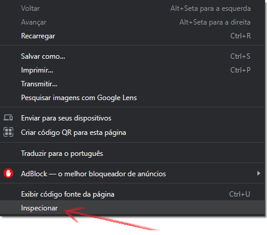
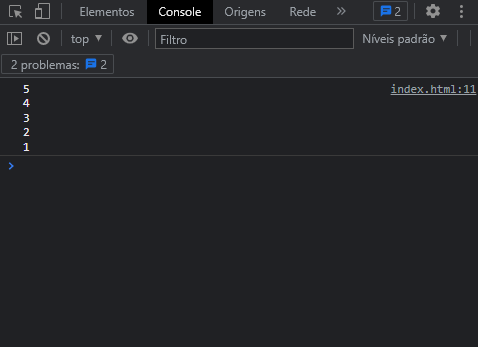
No arquivo index.html teremos o seguinte programa:
Note que a variável de controle (let i = 5) é declarada fora da estrutura while. Em seguida a variável saida é declarada com o valor vazio.
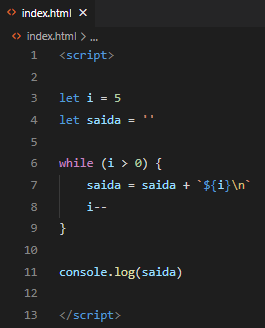
IMPORTANTE: Como o teste é realizado no início, é possível que os comandos dentro das chaves { } não sejam executados.
Do ... While - Repetição com teste no final
Na estrutura do ... while o teste condicional é realizado no final.
do {
comandos
} while (condição)
Exemplo:
Nota-se que a variável inicio é mostrada logo no começo da estrutura dentro do comando do e em seguida é incrementada (inicio++). Em seguida, é verificado a condição (inicio < voltas), se for true a estrutura volta para o começo do comando do.

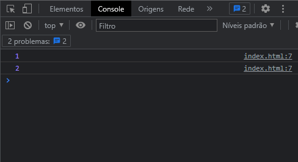
IMPORTANTE: No do ... while, fica garantido que os comandos dentro das chaves { } serão realizados no mínimo uma vez.
Break e Continue - Interrupções nos laços
Em JavaScript temos dois comandos que são utilizados nas estruturas de repetição. O break e o continue. O break sai do laço de repetição e o continue retorna ao início do laço.

Os comandos break e continue podem ser usados nas três estruturas de repetição: for, while e do ... while. Caso o comando continue seja executado em um laço for, o incremento ou decremento ocorre normalmente.
Exemplo:
No exemplo abaixo, temos um while em que a sua condição sempre vai ser true. O laço só irá finalizar quando o comando break for executado.
Ao entrar na estrutura if pela primeira vez, o i tem valor de 1. Logo, é verificado a condição se i é menor que 5, se resultar em true, o i é incrementado (i = i + 1). Quando o comando continue é executado, o laço while volta para o início.
O laço de repetição while só irá finalizar quando o i for 5, pois entrará no comando else if e o comando break será executado. Logo em seguida, o comando console.log(i) é executado.
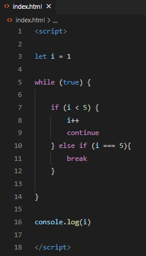
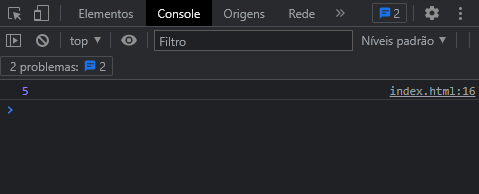
Contadores e Acumuladores
Características:
➜ A variável contadora ou acumuladora deve receber uma atribuição inicial, geralmente zero.
➜ A variável contadora ou acumuladora deve receber ela mesma mais algum valor.
Diferença:
➜ O contador recebe ele mesmo mais 1.
➜ O acumulador recebe ele mesmo mais uma variável.
Exemplo:
O programa faz a leitura de contas que devem ser pagas por um usuário. Na saída, as contas são exibidas e, logo após, o número de contas (contador) e a soma dos valores (acumulador) são destacados.
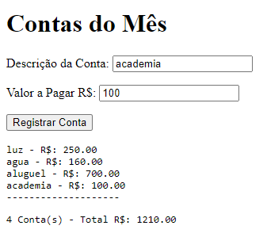
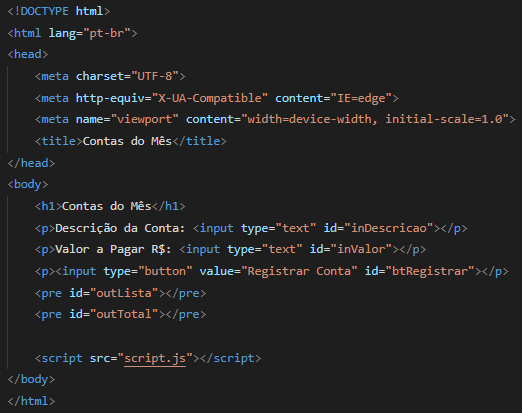
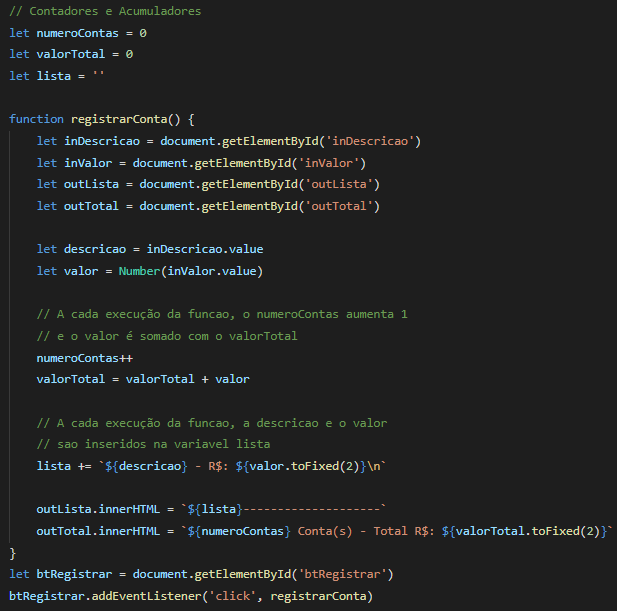
No próximo exemplo, o programa receberá um número e informará se ele é primo ou não. O número primo é aquele que possui dois divisores, 1 e ele mesmo.
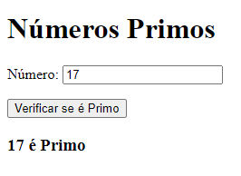
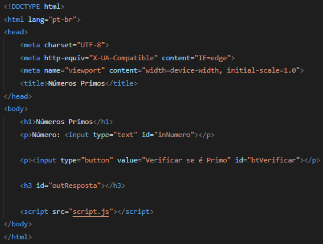
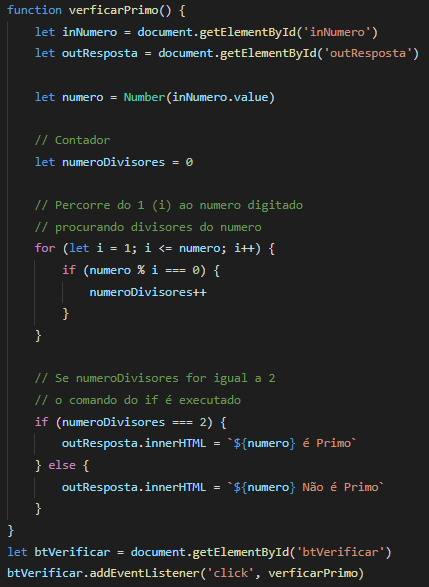
Exercícios
a ) Elabore um programa que leia o nome de uma fruta e um número. O número será a quantidade de vezes que a fruta deve ser repetida. Os nomes devem ser separados por um asterisco (*).
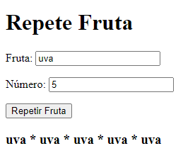
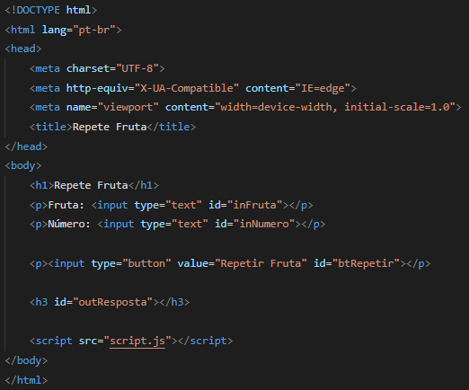
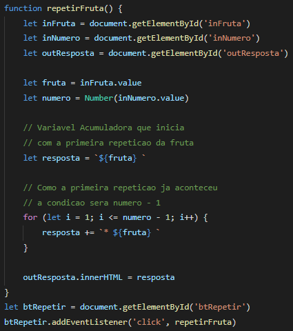
b ) Elabore um programa que leia o número inicial de chinchilas e anos, e informe a previsão de cada ano, sabendo que a cada ano o número de chinchilas triplica. O número inicial de chinchilas deve ser no mínimo 2 (casal).
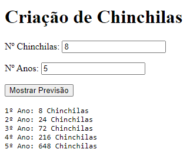
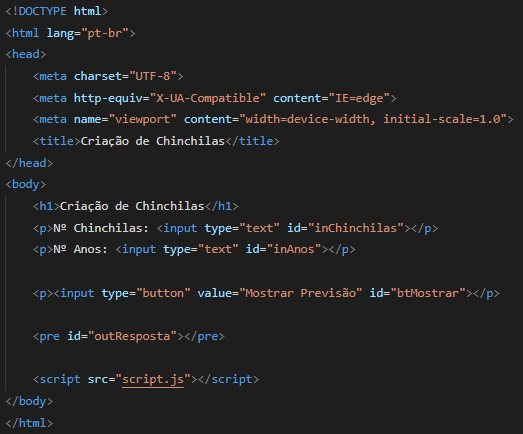
Na variável resposta (abaixo), iniciamos com a string acumuladora (`1º Ano: ${chinchilas} Chinchilas\n`). Devido isso, no loop for, a variável de controle se inicia em 2 e a repetição da estrutura for acontece até o valor digitado na variável anos. A cada repetição, o valor de chinchilas é multiplicado por 3 e armazenado na variável chinchilas.
Logo em seguida, temos o comando resposta += `${i}º Ano: ${chinchilas} Chinchilas\n`, que a cada repetição acumula strings dessa forma (por exemplo):
2º Ano: 24 Chinchilas
3º Ano: 72 Chinchilas
4º Ano: 216 Chinchilas
Todas essas strings são armazenadas na variável acumuladora resposta.
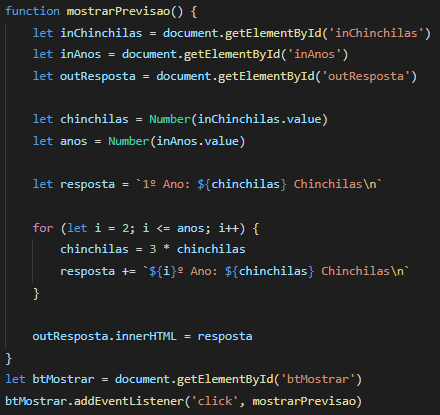
c ) Elabore um programa que leia um número e verifique se ele é ou não um número perfeito. Número perfeito é aquele que é igual a soma dos seus divisores inteiros (exceto o próprio número). O programa deve exibir os divisores do número e a soma deles.
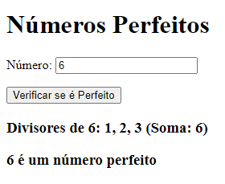
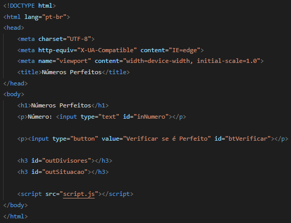
Antes do loop for, temos uma variável acumuladora (divisores) e uma variável contadora (soma). As duas variáveis já são iniciadas com valores, logo a variável de controle dentro do for começa em 2.
A cada repetição, uma estrutura if (condição) é executada. Se a divisão de numero por i tiver o resto (%) igual a 0, os comandos entre as chaves { } serão executados.
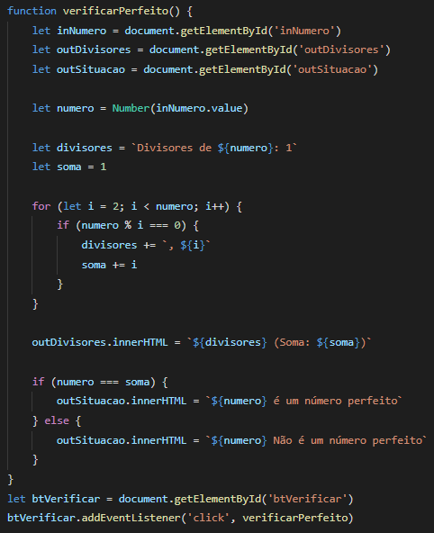
d ) Elabore um programa que leia dois números e realize a sua contagem, crescente ou decrescente. Números negativos são permitidos.
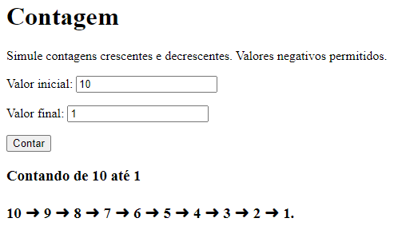
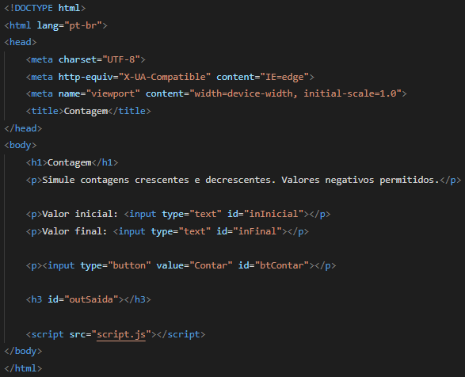
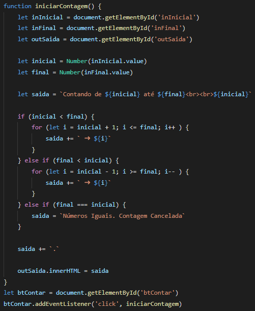